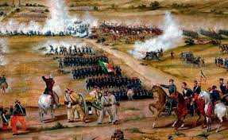

Batalla del 5 de mayo
4 de mayo


Nuevamente, un 4 de mayo de 1862, Atlixco, enfrenta una batalla en contra de conservadores que pretendían sumarse al Ejército Francés. Hecho decisivo en la epopeya del 5 de Mayo, que hoy es parte de la historia nacional.
El propio Benito Juárez creó una medalla reconociendo esta aportación de los atliscenses que señalaba: “Derrotando a los traidores el 4 de mayo, contribuyó eficazmente al triunfo alcanzado en Puebla en contra del Ejército Francés el 5 de mayo de 1862”
El propio gobierno de Benito Juárez consideró que sin el triunfo del 4 de mayo en Atlixco, no hubiera sido posible la victoria del 5 de mayo en Puebla.
Justamente ello fue el sustento para que en el año 2010: Del Bicentenario y Centenario de nuestros movimientos fundacionales, por unanimidad de votos, el Congreso del Estado aprobara el Decreto en el que se declara “Dos Veces Heroica la Ciudad de Atlixco”
La aportación de Atlixco y la región al movimiento de Independencia está plasmada en la obra de la historiadora Alicia Tecuanhuey, “La formación del consenso por la Independencia. Lógica de la Ruptura del Juramento. Puebla, 1810-1821”
Por ello importante hacer una recordación de estos hechos, en el contexto de los eventos conmemorativos al 4 y al 5 de Mayo celebrados en Atlixco y en la ciudad de Puebla, éstos últimos con la presencia del Presidente de México Enrique Peña Nieto. Primero, porque para Atlixco es un gran orgullo y también, porque representa sin duda, la aportación histórica, cultural y social que Atlixco ha dado a Puebla y al país y que servirá a las y los jóvenes de hoy, y a las futuras generaciones, para rescatar su interés por la historia y fundamentalmente el sentido de identidad y pertenencia a esta noble tierra: Atlixco

El 5 de mayo, a las 9 de la manana, aparecen los franceses en el horizonte, pero es hasta las 11 de la manana cuando comienzan las hostilidades, anunciándose con un cañonazo desde el Fuerte de Guadalupe y acompañado por los repiques de las campanas de la ciudad.
El conde de Lorencez ordena una maniobra sorpresiva que divide a la columna francesa en dos; eran 4,000 hombres marchando para atacar los Fuertes de Loreto y Guadalupe.
El 6o. Batallón de la Guardia Nacional del Estado de Puebla, bajo el mando del coronel Juan Nepomuceno Méndez, fue el primer cuerpo del Ejército de Oriente en hacer frente a los franceses y rechazar el ataque.
Varios embates franceses fueron repelidos por la resistencia del Ejército Mexicano como es el caso de los zuavos (originarios de Argelia), el regimiento de élite de la infantería francesa, quienes iniciaron un cauteloso ascenso hacia el Fuerte de Guadalupe, pero fueron recibidos con bayonetas y obligados lo franceses a retroceder.
A las 2h30 de la tarde, cuando los mexicanos empezaban a vislumbrar la victoria, Lorencez se dispuso a lanzar el último asalto, dirigiendo a los Cazadores de Vincennes y el Regimiento de Zuavos hacia Guadalupe. Zaragoza dispuso que el Batallón Reforma de San Luis Potosí saliera en auxilio de los fuertes.
Luego de ser repelidos por última vez, las fuerzas del Ejército Expedicionario Francés comenzaron a huir completamente dispersados. Se replegaron a la hacienda Los Álamos, para finalmente retirarse hacia Amozoc.

En 1857, ocurrió la Guerra de Reforma : un conflicto armado donde los liberales afrontaron los conservadores para impedir que la nueva constitución restituya a los militares y a la Iglesia los privilegios que habían perdido con las Leyes de Reforma. Benito Juárez, gobernador de Oaxaca al momento del conflicto, representaba a los liberales y Ignacio Comonfort, presidente de la República, representaba a los conservadores. Despues de 3 años, a principio del año 1961, los liberales ganaron la guerra y el Presidente Benito Juárez instauró su gobierno en la Ciudad de México.
Pero despues de 3 años de conflicto, México está financieramente en ruinas y tiene deudas enormes que los conservadores contrataron con banqueros europeos para pagar la guerra. La deuda era de 80 millones de pesos; 69 millones para los ingleses, 9 millones para los españoles y 2 millones para Francia.
El presidente Benito Juárez declaró el 17 de julio de 1861, una moratoria de dos años en el pago de deudas a prestamistas extranjeros. Posteriormente, en octubre de ese mismo año, Francia, Inglaterra y España acordaron intervenir la República para exigir el pago de sus deudas.
En octubre de 1861, Francia, Inglaterra y España firmaron la Convención de Londres, en la cual se comprometieron a enviar contingentes militares a México. La Alianza Tripartita amenazó al presidente Benito Juárez con invadir el país si no se saldaba por completo las deudas con los tres países europeos.

Dirección
Av. Ejercito de Oriente s/n, Calle Laureles S/N Unidad Cívica 5 de Mayo. Los Fuertes, 72260 Puebla, Pue.
Horario
Martes a domingo 10:00 a 18:00 hrs. Días festivos 10:00-17:00 hrs.
Costo
Entrada libre

Ubicación: Cerro Acueyametepec
Época de construcción: Como ermitas, Siglo XVI; con uso militar, 1816
Estado de conservación: Restauradosz
Uso actual: Museo de la no intervención "Fuerte de Loreto"
Propietario: Declarados propiedad de la nación en 1930


 3
3 5
5